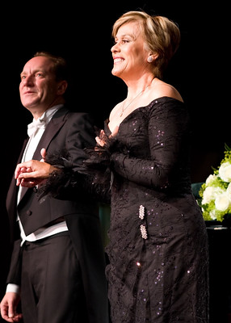

Dame Kiri Te Kanawa
Dame Kiri Te Kanawa, born in 1944 in Gisborne, New Zealand, is one of the most celebrated opera singers of the 20th century. Her stunning soprano voice and commanding stage presence have earned her international acclaim and a place among the world’s most distinguished opera performers. Dame Kiri first gained widespread attention in the 1970s, when she made her debut at the Royal Opera House in London as the Countess in Mozart's *The Marriage of Figaro*. Her performance was met with critical acclaim, and she quickly became a sought-after talent, gracing the stages of prestigious venues such as the Metropolitan Opera in New York, La Scala in Milan, and the Vienna State Opera. Her repertoire, known for its breadth and beauty, includes works by composers such as Mozart, Strauss, Puccini, and Verdi.
Beyond her extraordinary career in opera, Dame Kiri has also made significant contributions to the world of music through her recordings and concerts, extending her influence to a wider audience. She performed at many notable events, including the wedding of Prince Charles and Lady Diana Spencer in 1981, where her rendition of Handel's *Let the Bright Seraphim* was broadcast to millions. In addition to her artistic achievements, Dame Kiri has dedicated herself to nurturing the next generation of musicians, establishing the Kiri Te Kanawa Foundation in 2004 to support young opera singers in their training and development. Her legacy as an artist and mentor continues to inspire, solidifying her place as one of New Zealand’s most iconic cultural figures.